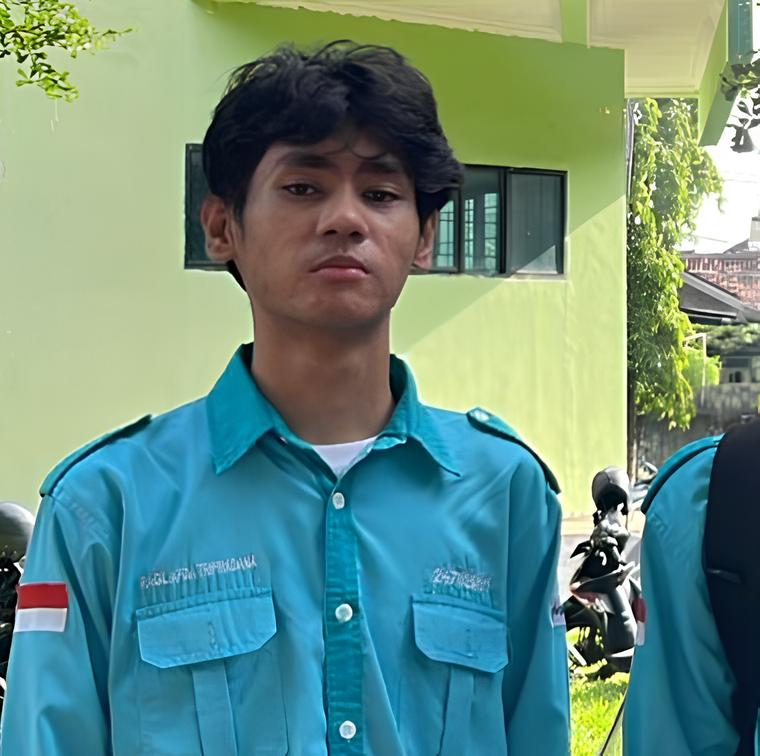
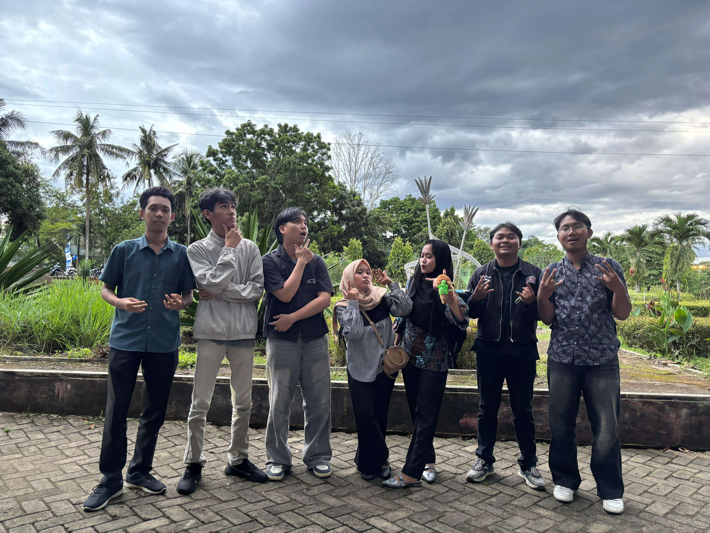
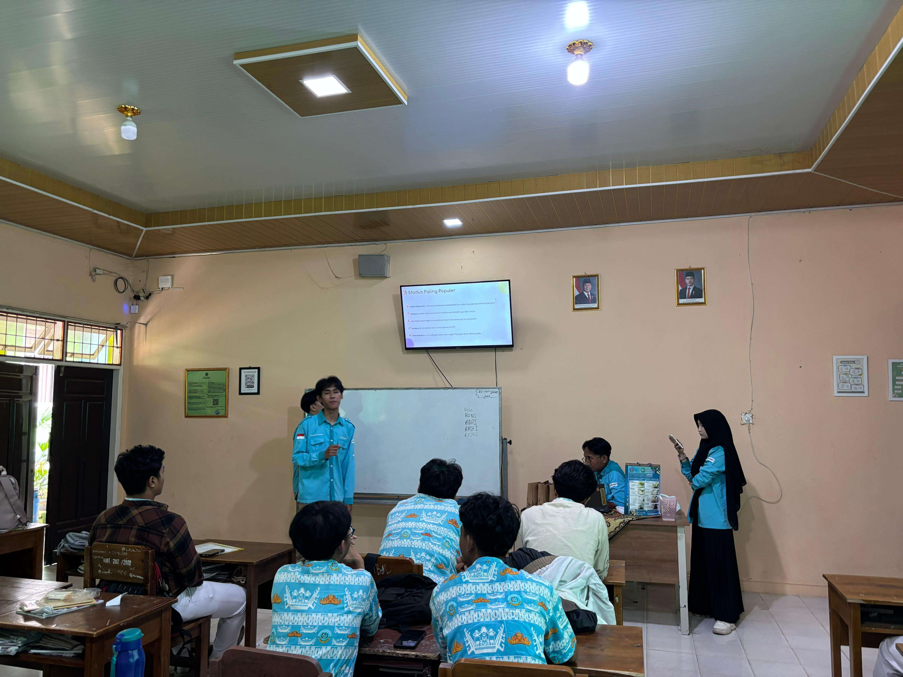
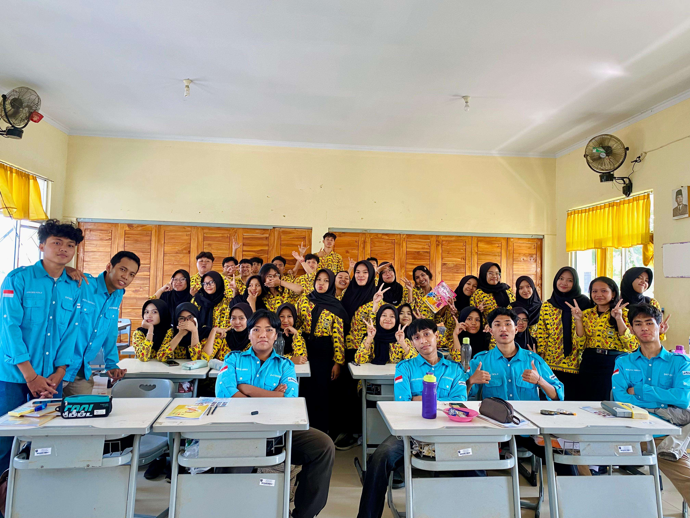
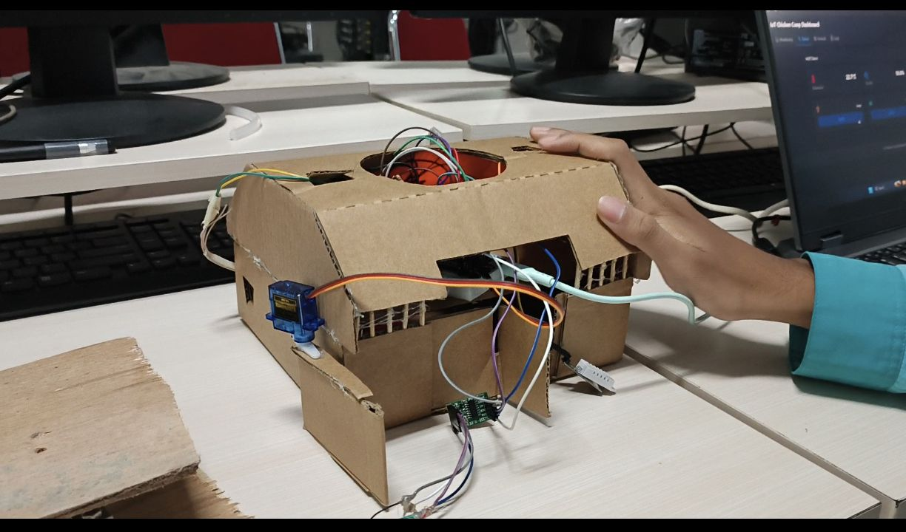

Mahasiswa Teknologi Rekayasa Internet di Politeknik Negeri Lampung. Memiliki fondasi kuat di bidang teknologi dan internet, serta sangat antusias memperdalam Infrastruktur Jaringan, Artificial Intelligence, Cloud Computing, Data Engineer, Pemrograman Otomasi, Full Stack dan Internet of Things.
Tech Stack & Tools
Docker
Postman
VMware
VS Code
GitHub
Python
Packet Tracer
PNETLab
MQTTX
Arduino IDE

Ragil Afda
Network Engineer
Ketuk Saya
Pengalaman & Sosialiasi
Divisi PSDM (Pengembangan Sumber Daya Manusia)2025 - Sekarang
Pengurus Himpunan Mahasiswa Teknologi Rekayasa Internet
Politeknik Negeri Lampung
Bertanggung jawab dalam pengembangan sumber daya mahasiswa melalui pelatihan, workshop, dan program pengembangan soft skill serta hard skill untuk meningkatkan kompetensi anggota himpunan.

Full View
Pemateri / Edukator2025 Desember
Pencegahan Penipuan Digital di Lingkungan Pendidikan
MAN 1 Bandar Lampung
Menjadi pengisi materi dalam sosialisasi pencegahan kejahatan siber yang ditujukan kepada pelajar SMA. Fokus memberikan edukasi teknis yang mudah dipahami mengenai mitigasi ancaman digital, pengenalan modus penipuan berbasis file APK (Android Package Kit), serta cara mengamankan identitas dan akun digital.

Full View
Pemateri / Edukator2025 Juli
Pendekatan Computational Thinking
SMA Negeri 15 Bandar Lampung
Memberikan sosialisasi mengenai pentingnya Computational Thinking (Berpikir Komputasional) sebagai pondasi pemecahan masalah. Melatih siswa/i dalam menerapkan logika algoritma, dekomposisi masalah, dan pengenalan pola dalam kehidupan sehari-hari maupun dalam dasar pemrograman.

Full View
Portofolio Proyek
Jaringan Komputer
Full View
Infrastruktur Jaringan (CCNA)
Desain dan praktik konfigurasi jaringan tingkat lanjut mencakup OSPF, BGP, NAT, WLAN, dan VLAN. Proyek ini dibangun sepenuhnya menggunakan simulasi Cisco Packet Tracer sebagai syarat kelulusan mata kuliah Jaringan Komputer 2.
Cisco Packet TracerRouting & Switching

Internet of Things
Full View
Smart Livestock Monitoring
Proyek kelompok berbasis investigasi lapangan langsung untuk menemukan masalah riil dan memberikan solusi berbasis IoT. Berfokus pada pengembangan sistem pemantauan inventarisasi sisa pakan ternak.
Hardware & SensorField Research
Berpikir Komputasi & Pemrograman
Full View
Mini Project Smart City - CLI
Pembuatan desain fitur aplikasi Command Line Interface (CLI) menggunakan Python. Menerapkan konsep Object-Oriented Programming (OOP) serta mengoptimalkan list/string methods dan exception handling.